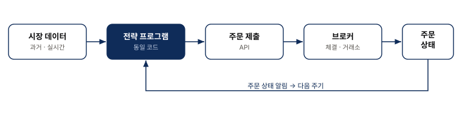
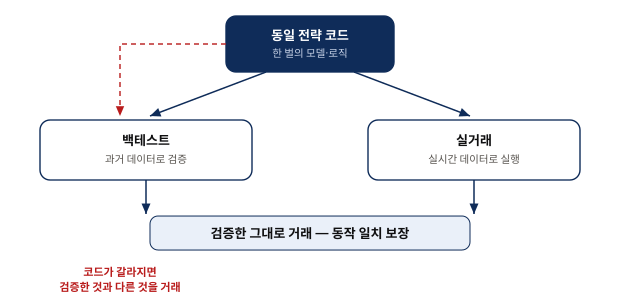
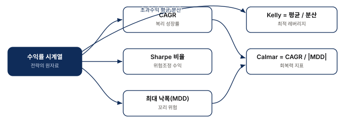
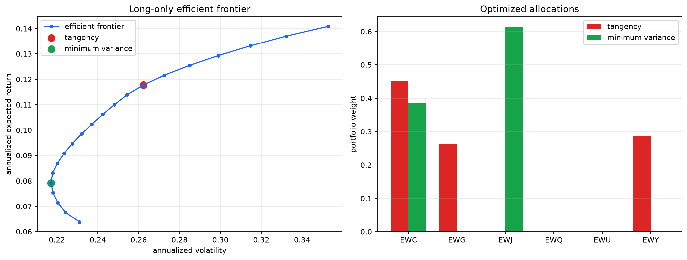
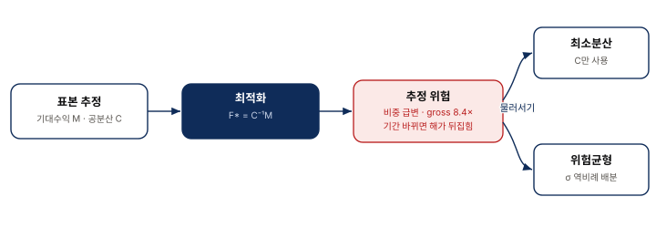

알고리즘 트레이딩의 기초
Chapter 1
0. 핵심 요약
『Machine Trading』 1장은 이후 모든 장에서 반복해 쓰일 기초를 한자리에 모은다. 데이터를 어디서 어떻게 구하고, 검증한 모델을 실전과 어떻게 일치시키며, 브로커를 무엇으로 고르고, 전략의 좋고 나쁨을 어떤 지표로 재며, 마지막으로 여러 전략(자산)에 자본을 어떻게 나눌지를 다룬다. 이 장은 개별 전략을 만들지 않는다. 대신 모든 전략이 딛고 설 공통 지반을 정의한다.
- 신뢰 — 백테스트에서 좋았던 전략을 실전에서도 같은 것이라 믿을 근거는 무엇인가?
- 측정 — 무엇으로 전략의 성과와 위험을 판단하는가?
- 배분 — 한정된 자본을 여러 자산에 어떻게 나눠야 하며, 그 최적해를 왜 그대로 믿으면 안 되는가?
| 단계 | 핵심 질문 | 장의 주장 | 실무에서 남는 판단 |
|---|---|---|---|
| 데이터 | 전략을 검증할 재료는 믿을 만한가? | 생존 편향·미래 정보 편향이 백테스트를 부풀린다. | 데이터 품질을 전략보다 먼저 감사한다. |
| 일치 | 검증한 것과 거래하는 것이 같은가? | 백테스트와 실거래에 같은 프로그램을 써야 한다. | 코드 분기를 최소화하고, 재구축 시 결과를 대조한다. |
| 측정 | 무엇으로 성과를 재는가? | 절대 수익이 아니라 위험조정·꼬리위험·레버리지로 본다. | CAGR·Sharpe·MDD·Calmar·Kelly를 함께 본다. |
| 배분 | 자본을 어떻게 나누는가? | 복리 성장 극대화 = Sharpe 극대화 = 켈리 배분이 수학적으로 같다. | 최적해 $F^*=C^{-1}M$ 를 추정 위험 때문에 그대로 쓰지 않는다. |
1. 시스템의 순환 구조와 데이터의 함정
- 알고리즘 트레이딩은 데이터 → 전략 프로그램 → 주문 → 상태 수신의 순환이다.
- 백테스트를 부풀리는 두 편향은 생존 편향과 미래 정보 편향이다.
- 실시간 세계에서는 지연시간(latency)이 곧 비용이 된다.
전략 프로그램은 시장 데이터(과거든 실시간이든)를 입력받아 판단하고, API로 브로커에 주문을 제출한 뒤, 체결·대기 같은 주문 상태를 다시 받아 온다. 저자가 그림 1.1에서 백테스트 프로그램과 실시간 실행 프로그램을 일부러 같은 상자로 그린 것이 이 장의 첫 번째 신념이다(2절에서 이어진다).

교재 그림 1.1의 논리를 발표자가 재구성. 핵심은 데이터·주문·상태가 하나의 순환을 이루고 그 중심에 단일 전략 프로그램이 있다는 점.백테스트의 재료인 과거 데이터에는 두 가지 착시가 숨는다. 생존 편향(survivorship bias)은 살아남은 종목만 넣고 상장폐지된 종목을 빼서 성과를 좋아 보이게 하고, 미래 정보 편향(look-ahead bias)은 그 시점엔 알 수 없던 미래 정보(예: 나중에 발표된 재무수정치, 사후 조정된 가격)가 과거 데이터에 섞여 드는 오류다. 선물은 만기가 다른 계약을 롤오버(rollover)로 이어 붙일 때 연속계약 구성 방식에 따라 결과가 달라진다.
| 함정 | 무엇인가 | 백테스트에 미치는 영향 | 방어 |
|---|---|---|---|
| 생존 편향 | 사라진 종목을 제외 | 수익률·승률이 실제보다 높아 보임 | 상장폐지 종목 포함된 데이터셋 사용 |
| 미래 정보 편향 | 당시 몰랐던 정보 혼입 | 존재할 수 없는 성과가 만들어짐 | 시점 정합(point-in-time) 데이터, 지연 반영 |
| 롤오버 | 선물 연속계약 이어붙이기 | 연결 방식마다 수익·변동성이 달라짐 | 연결 규칙을 고정하고 명시 |
| 지연시간 | 사건이 프로그램에 닿는 시간 | 실시간 전략에서 체결가·기회를 잠식 | BBO·내재변동성 곡면 등 데이터 신선도 관리 |
좋아 보이는 백테스트를 만나면 전략의 아이디어보다 데이터의 편향을 먼저 의심한다. 편향은 전략이 아니라 재료에서 들어오기 때문이다.
2. 검증한 것과 거래하는 것을 일치시키기
- 같은 프로그램을 쓰면 백테스트한 모델을 글자 하나 다르지 않게 실전에서 굴린다.
- MATLAB·R·Python 같은 REPL 언어는 빠른 연구·수정에 유리하다.
- 저자의 회사는 성능·안전을 위해 C#으로 한 번 더 독립 구축하고 두 결과를 대조한다.
백테스트용 코드와 실거래용 코드가 따로 놀면 둘 사이에 미세한 차이가 스며들어 검증한 것과 다른 것을 거래하는 사고가 난다. 그래서 저자는 백테스팅과 트레이딩 플랫폼을 한데 묶어 논의한다. 이것이 그림 1.1의 "한 상자"가 뜻하는 바다.

교재의 "backtest = live" 원칙을 발표자가 재구성. 붉은 점선은 코드 분기 시의 위험 경로.연구 단계에서는 컴파일 없이 바로 실행·수정하는 REPL 언어(MATLAB·R·Python)가 반복 속도를 높인다. 그러나 실전의 지연시간·안정성 요구가 커지면 성능이 중요한 부분을 컴파일 언어로 다시 구현해야 할 수 있다. 저자의 회사가 C#으로 시스템을 한 번 더 독립 구축하는 이유가 이것이다. 이때 두 구현의 결과를 대조하는 것이 곧 "같은 것을 거래한다"는 원칙을 지키는 검증이 된다.
동일 프로그램은 일치를 얻지만 언어·성능의 타협을 부른다. 별도 구현은 성능을 얻지만 drift 위험을 낳는다. 그래서 별도 구현을 하면 반드시 교차 대조로 되묶는다.
3. 브로커 — 수수료보다 안전성이 먼저다
- 브로커 선택의 첫 기준은 낮은 수수료가 아니라 자산의 안전성이다.
- 미국은 파산 시 SIPC가 고객 자산을 한도까지 보호한다.
- 통화 거래의 결제 위험(헤르슈타트 위험)은 CLS 은행의 동시 결제로 완화된다.
수수료는 눈에 잘 띄지만, 브로커가 무너지면 전략의 우열은 의미가 없어진다. 그래서 안전성이 첫 기준이다. 미국의 SIPC는 증권사 파산 시 고객 현금·증권을 한도까지 보호한다. 한편 브로커가 주문을 특정 체결처로 넘기고 리베이트를 받는 주문 흐름 대가(payment for order flow)는 체결 품질과 이해상충을 함께 따져야 할 항목이다.
| 항목 | 무엇을 보는가 | 왜 중요한가 |
|---|---|---|
| 안전성(SIPC 등) | 파산 시 고객자산 보호 한도 | 브로커 부실이 전략 성과를 무력화 |
| 체결 품질 | 주문 흐름 대가·슬리피지 | 낮은 수수료가 나쁜 체결로 상쇄될 수 있음 |
| 결제 위험 | 통화 거래의 헤르슈타트 위험 | 한쪽이 넘긴 뒤 상대 파산 시 미수취 |
| CLS 결제 | 통화 양쪽 동시 결제 | 결제 위험을 구조적으로 제거 |
운영 항목(안전성·체결·결제)은 대개 백테스트에 나타나지 않는 비용이다. 성과 지표를 논하기 전에 이 지반이 단단한지 먼저 확인한다.
4. 성과 지표 — 무엇으로 좋고 나쁨을 판단하는가
- CAGR는 복리의 힘을 보여 주지만 레버리지에 따라 극단으로 벌어진다.
- 켈리 공식은 장기 복리를 극대화하는 최적 레버리지를 준다.
- Sharpe·MDD·Calmar는 수익을 위험·꼬리위험으로 나눠 본다.
절대 수익만 보면 위험을 숨긴다. 이 장의 지표들은 수익을 위험·레버리지·꼬리위험의 렌즈로 다시 본다. 먼저 CAGR(연평균 복합 성장률)은 복리로 굴렸을 때의 연 성장률이다. 하루 1%씩 252 거래일을 복리로 얻으면
$$1.01^{252} - 1 \approx 1127\%$$
가 되어, 단순 합산 $252\%$ 와 크게 벌어진다(재현 실험도 CAGR $\approx 1127\%$ 로 일치). 그러나 복리는 손실에서도 잔인하다. 레버리지 $5\times$ 로 굴리다 블랙먼데이급 $-20\%$ 충격을 맞으면 자본은 $5 \times (-20\%) = -100\%$, 즉 전액 소멸한다. 그래서 최적 레버리지를 정하는 켈리 공식이 필요하다.
$$\text{Optimal leverage} = \frac{\text{Mean of Excess Returns}}{\text{Variance of Excess Returns}}$$

발표자 재구성. 지표들은 서로 독립이 아니라 같은 수익률 시계열을 다른 각도로 요약한다.| 지표 | 재는 것 | 수식(요지) | 한계 |
|---|---|---|---|
| CAGR | 복리 연 성장률 | $(1+r)^{252}-1$ | 레버리지·복리로 왜곡, 위험 미반영 |
| Kelly 레버리지 | 장기 복리 최적 레버리지 | $\dfrac{\text{mean}}{\text{var}}$ | 추정 오차에 민감, 실전은 절반 켈리 |
| Sharpe 비율 | 위험조정 수익 | $\dfrac{\text{mean}}{\text{std}}\times\sqrt{252}$ | 정규성 가정, 꼬리위험 과소평가 |
| 최대 낙폭(MDD) | 고점 대비 최대 손실 | 고점−저점의 최대치 | 발생 빈도·회복기간 미포함 |
| Calmar 비율 | 회복력(수익/낙폭) | $\dfrac{\text{CAGR}}{|\text{MDD}_{3\text{y}}|}$ | 최근 3년 창에 의존 |
5. 자본 배분의 수학 — 세 개의 Box로 읽기
- Box 1.1: 로그수익률 평균과 순수익률의 관계 $\mu \approx m - s^2/2$ 는 잘게 쪼갤수록 정확해진다.
- Box 1.2: 이차계획법으로 효율적 프런티어와 접점(tangency) 포트폴리오를 구한다.
- Box 1.3: 복리 성장 극대화 = Sharpe 극대화 = 켈리 배분 $F^*=C^{-1}M$ 이 수학적으로 같다.
이 절의 근거는 저자의 공식 데이터를 그대로 재현한 실험이다. 6개 국가 ETF(EWC 캐나다·EWG 독일·EWJ 일본·EWQ 프랑스·EWU 영국·EWY 한국), 2005-05-12~2015-04-17, 2,500 거래일. 아카이브·입력 파일은 SHA-256으로 검증했고(부록 참조), 15개 자동 검증이 모두 통과했다.
Box 1.1 — 순수익률과 로그수익률의 평균
순수익률 $\text{Net}(t)=\frac{P(t)}{P(t-1)}-1$ 와 로그수익률 $\text{Log}(t)=\log P(t)-\log P(t-1)$ 는 다르지만, 로그수익률 평균 $m$ 과 분산 $s^2$ 로 순수익률 기대치 $\mu$ 를 근사할 수 있다.
$$\mu \approx m - \frac{s^2}{2} \tag{1.1}$$
기간을 $N$ 개로 잘게 쪼갤수록 이 항등식의 오차가 줄어든다. 재현 실험(NumPy PCG64, seed 1, 200개 시드 중앙값 기준)은 이를 정확히 확인한다.
| $N$ | Python 항등식 오차 | 책 항등식 오차 | 해석 |
|---|---|---|---|
| 100 | $4.5\times10^{-6}$ | $9.4\times10^{-4}$ | 거칠다(부호도 어긋날 수 있음) |
| 10,000 | $7.6\times10^{-8}$ | $1.6\times10^{-7}$ | 빠르게 수렴 |
| 1,000,000 | $1.2\times10^{-11}$ | $1.8\times10^{-11}$ | 사실상 일치 |
 재현 실험
재현 실험 run_chapter1_analysis.py 산출(figures/net_vs_log_returns.png). seed 1만이 아니라 200시드 중앙값·범위를 함께 그려 표본운을 공개.
Box 1.2 — 효율적 프런티어와 접점 포트폴리오
목표 수익률마다 위험(분산)을 최소화한 포트폴리오들의 곡선이 효율적 프런티어다. 이는 이차계획법(QP)으로 푼다.
$$\min\ \tfrac{1}{2}\,x'Hx + f'x \quad \text{s.t.}\ Ax \le b,\ A_{eq}x = b_{eq}$$
원점에서 그은 직선이 프런티어에 접하는 접점(tangency) 포트폴리오가 Sharpe 최대 지점이다. 롱온리(long-only) 제약에서 재현한 접점 비중은 책과 소수점 다섯 자리까지 일치했다(최대 절대 오차 $4.4\times10^{-5}$).

재현 실험 산출(figures/efficient_frontier.png). 공식 데이터(epchan.com/book3, SHA-256 검증) 기반. 접점 daily Sharpe $\approx 0.0283$.| ETF | Python 비중 | 책 비중 |
|---|---|---|
| EWC (캐나다) | 45.14% | 45.13% |
| EWG (독일) | 26.35% | 26.34% |
| EWY (한국) | 28.51% | 28.52% |
| EWJ·EWQ·EWU | 0% | ≈0% |
Box 1.3 — 복리 극대화 = Sharpe 극대화 = 켈리 배분
저자는 라그랑주 승수로, 복리 성장률 극대화와 Sharpe 극대화가 같은 해로 이어짐을 보인다. 공매도를 허용하면(무제약) 최적 자본 배분은 닫힌 형태로 떨어진다.
$$F^{*} = C^{-1}M$$
여기서 $M$ 은 기대 초과수익 벡터, $C$ 는 공분산 행렬이다. 재현 실험에서 무제약 켈리 배분은 롱온리보다 Sharpe가 높았지만($0.0385 > 0.0283$), 그 대가로 공매도를 포함한 총노출(gross exposure)이 $8.42\times$ 에 달했다. 즉 "수학적으로 더 좋은" 해가 실전에서는 위험할 수 있다 — 6절의 주제다.
| 배분 | daily Sharpe | 공매도 | 총노출(gross) |
|---|---|---|---|
| 롱온리 접점(Box 1.2) | 0.0283 | 불가 | $1\times$ |
| 무제약 켈리 $F^*=C^{-1}M$ | 0.0385 | 허용(EWQ −2.53 등) | $8.42\times$ |
세 Box는 결국 한 이야기다. 복리 성장 극대화 = Sharpe 극대화 = 켈리 배분. 최적해 $F^*=C^{-1}M$ 는 아름답지만, 그 안에는 추정된 $M,\ C$ 가 들어 있다.
6. 추정 위험과 현실적 배분 — 언제 물러설 것인가
- 최적해 $F^*=C^{-1}M$ 는 추정된 $M,C$ 에 극도로 민감하다.
- 표본을 반으로 나누면 최적 비중이 완전히 뒤집힌다 — 추정 위험의 실증.
- 그래서 최소분산·위험균형으로 물러서되, 모두가 같은 규칙을 쓰면 전염 위험이 생긴다.
가장 불안정한 입력은 기대수익 $M$ 이다. 재현 실험에서 데이터를 2010-04-30을 기준으로 전·후반으로 나눠 각각 최적 비중을 구하자, 두 해가 서로 거의 겹치지 않았다(전반은 EWC·EWY 중심, 후반은 EWG·EWJ 중심). 같은 자산·같은 방법인데도 기간만 바뀌면 "최적"이 뒤집힌다. 이것이 추정 위험(estimation risk)이며, 무제약 켈리의 $8.42\times$ 총노출을 실전에서 그대로 쓰면 안 되는 이유다.

발표자 재구성. 붉은 상자는 추정 위험, 오른쪽 두 상자는 기대수익 추정을 덜 믿는 두 대안.대응은 추정을 덜 믿는 것이다. 최소분산 포트폴리오는 불안정한 $M$ 을 아예 버리고 $C$ 만으로 분산을 최소화한다. 위험균형(risk parity)은 각 자산 변동성에 반비례해 자본을 나눠 위험 기여를 균등화한다. 다만 저자는 경고한다 — 모두가 같은 위험관리를 쓰면 위기에서 청산이 청산을 부르는 전염(contagion)이 생긴다.
| 방식 | 사용하는 입력 | 강점 | 약점 / 언제 물러서나 |
|---|---|---|---|
| 무제약 켈리 $C^{-1}M$ | $M$ 과 $C$ | 이론상 최대 복리·Sharpe | 추정 위험 최대, 총노출 폭발 |
| 롱온리 접점 | $M$ 과 $C$ (제약) | 공매도 없이 Sharpe 최대 | 여전히 $M$ 추정에 민감 |
| 최소분산 | $C$ 만 | 불안정한 $M$ 회피 | 수익 관점 포기, 저변동 집중 |
| 위험균형 | 변동성(대각 $C$) | 위험 기여 균등, 견고 | 전염 위험, 레버리지 필요 |
핵심 용어
| 용어 | 이 장에서의 의미 |
|---|---|
| 생존 편향 | 살아남은 종목만 넣어 성과가 좋아 보이는 착시 |
| 미래 정보 편향 | 그 시점엔 알 수 없던 미래 정보가 과거 데이터에 섞이는 오류 |
| 롤오버 | 만기가 다른 선물 계약을 하나의 연속계약으로 이어 붙이기 |
| 지연시간(latency) | 시장 사건이 내 프로그램에 도착하기까지 걸리는 시간 |
| REPL 언어 | 컴파일 없이 바로 실행·수정하는 언어(MATLAB·R·Python) |
| SIPC | 증권사 파산 시 고객 자산을 한도까지 보호하는 미국 기구 |
| 결제 위험(헤르슈타트) | 통화 거래에서 한쪽이 넘긴 뒤 상대 파산으로 못 받는 위험 |
| CAGR | 레버리지를 유지하며 복리로 굴렸을 때의 연 성장률 |
| 켈리 공식 | 초과수익 평균÷분산으로 장기 복리를 극대화하는 최적 레버리지 |
| Sharpe 비율 | 수익을 위험(표준편차)으로 나눈 위험조정 수익률 |
| 최대 낙폭(MDD) | 고점 대비 가장 큰 손실 폭, 꼬리 위험의 척도 |
| Calmar 비율 | CAGR을 최근 3년 최대 낙폭 절댓값으로 나눈 값 |
| 효율적 프런티어 | 목표 수익률마다 위험을 최소화한 포트폴리오들의 곡선 |
| 접점 포트폴리오 | 원점에서 그은 직선이 프런티어에 접하는 Sharpe 최대 지점 |
| 켈리 최적 배분($F^*=C^{-1}M$) | 복리 성장과 Sharpe를 동시에 최대화하는 자본 배분 |
| 최소분산 포트폴리오 | 수익률 추정 없이 공분산만으로 분산을 최소화한 배분 |
| 위험균형(risk parity) | 각 자산 변동성에 반비례해 자본을 나눠 위험을 균등화 |
| 전염(contagion) | 모두가 같은 위험관리를 쓸 때 청산이 청산을 부르는 연쇄 붕괴 |
참고 자료와 도형 출처
- [1]Ernest P. Chan, Machine Trading: Deploying Computer Algorithms to Conquer the Markets, Wiley, 2017 — Chapter 1 「The Basics of Algorithmic Trading」, pp. 1~26.
- [2]공식 데이터·코드 아카이브: epchan.com/book3 (
Chap1 Basics.zip). 입력inputDataOHLCDaily_ETF_20150417.mat, SHA-256 검증. 6개 국가 ETF, 2005-05-12~2015-04-17, 2,500 거래일. - [3]그림 4·5는 재현 실험
run_chapter1_analysis.py(NumPy PCG64, seed 1)의 산출물이며, 그림 1·2·3·6은 발표자가 새로 구성한 도해다. Box 1.1~1.3의 수치는 책과 대조해 15개 자동 검증을 통과했다.